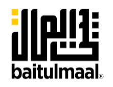

Donate
This is the most direct way you can help the people in Palestine, in particular in Gaza. While we only have seven organizations listed below there are many more you can donate to. It is recommended, if you intend to donate to any organization, look in on what that organization is actually doing and how they are helping. Each section's image will be a link to the website, alongside a text link to each website at the bottom of each section.
All links and donations are not made to Henrico for Palestine and any and all websites provided will lead to donates directly to their respective orgs. Under no instance will Henrico for Palestine handle donations or deal with moving funds along to other organizations.
Arab.org
Arab.org, based in Lebanon, is an essential for everyone. They are a non-profit, and in order to help all you do is click on a few buttons, and that is a donation. Each click helps towards helping the people of Palestine, and you can do them daily. They cost nothing, and give to people something. Alongside this they have an NGO portal, which can be used to find other organizations to donate to.
Arena
Though if you are able to give more than a click, there is other options. Based in Washington, DC, Anera is a primary option out of these, aid going towards ensuring shipping can continue into Gaza, and the donation of vital medical supplies. Doing this can help bring much needed medical relief towards the people of Palestine.
Baitulmaal
However, if you want a more direct way of knowing what you Donate, Baitulmaal is another great organization to donate to. They have a small list of packages ($30 to $325, more expensive) which you can donate money to cover. Hygiene, food, medical, and a full package can be donated towards. This is a great avenue towards helping the people of Palestine.